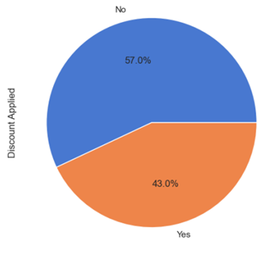
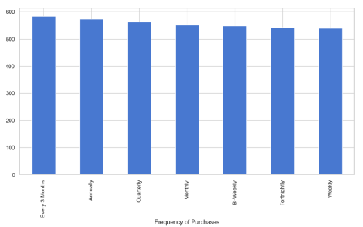
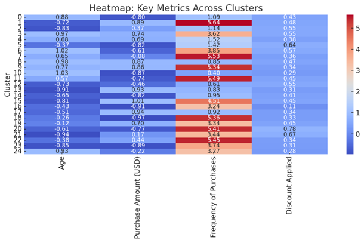

Customer Segmentation Analysis
Overview
Businesses operating in competitive markets must constantly refine their marketing strategies to attract and retain customers effectively. Understanding who the customers are, what they value, and how they behave is central to making data-driven marketing decisions.
This project focuses on developing a customer segmentation framework that enables businesses to deliver personalized marketing campaigns. Using customer attributes such as demographics, purchase history, and behavioral data, we applied K-Means clustering to group existing customers into distinct segments with shared characteristics.
Once the segments were identified, a predictive classification model was trained to assign future customers to the most relevant segment. Additionally, a discount usage prediction model was built to estimate the likelihood of each customer using a discount during purchase. Combining these insights allows businesses to allocate marketing resources efficiently, tailor promotional content to each group, and optimize overall revenue potential.
By transforming raw customer data into actionable insights, the project demonstrates how segmentation and predictive modeling can improve marketing effectiveness and reduce unnecessary spending.
Problem Statement
Traditional marketing strategies often rely on a one-size-fits-all approach, where the same campaigns are shown to all customers regardless of their needs or behaviors. This results in inefficient resource allocation and lower customer engagement, as not all customers respond similarly to identical offers.
The key problem addressed in this project is how to identify meaningful customer segments and predict future customer behavior to support data-driven marketing decisions. Specifically, this project aims to answer the following questions:
- How can we categorize customers into well-defined groups that share similar characteristics or purchase behaviors?
- How can we build a model to accurately assign new customers to these segments?
- How can we predict which customers are most likely to use discounts, enabling businesses to target incentives strategically?
By solving these challenges, this project provides a scalable analytical framework for personalized marketing, helping businesses maximize both customer satisfaction and profitability.
Data
This project uses the customer features dataset named “Customer Shopping Trends Dataset” from Kaggle. This dataset describes demographics, purchasing behavior, product preferences, and promotional interactions. Key variables include age, gender, purchase amount, payment method, purchase frequency, and customer review ratings, along with information on items purchased, shopping season, and discount usage.
The dataset provides a structured foundation for analyzing customer behavior, supporting customer segmentation, predictive modeling, and data-driven marketing strategies.
Snapshot
Records: 3,900 customers
Features: 15 columns
Preprocessing summary
Applied Z score normalization to all numerical variables using StandardScaler to ensure consistent scaling.
Categorized categorical features into three groups: binary, ordinal multi category, and non ordinal multi category variables.
Converted binary variables into numerical values of 0 and 1.
Encoded ordinal categorical variables into integer values that preserve their natural order using LabelEncoder.
Transformed non ordinal categorical variables into dummy variables and removed the original categorical columns.
Removed the Promo Code Used feature since it was an exact duplicate of Discount Applied to avoid double counting promotional effects.
Dropped Customer ID prior to modeling because identifier variables do not contain meaningful predictive information and may cause overfitting.
Feature Dictionary
| Feature Name | Description |
|---|---|
| Customer ID | Unique identifier assigned to each customer |
| Age | Age of the customer at the time of purchase |
| Gender | Gender of the customer. Values include Male and Female |
| Item Purchased | Specific item purchased by the customer |
| Category | Product category associated with the purchased item |
| Purchase Amount (USD) | Total monetary value of the purchase in US dollars |
| Location | Geographic location where the purchase was made |
| Size | Size attribute of the purchased item |
| Color | Color attribute of the purchased item |
| Season | Season during which the purchase occurred |
| Review Rating | Rating provided by the customer for the purchased item |
| Subscription Status | Indicates whether the customer has an active subscription. Yes or No |
| Shipping Type | Shipping option selected by the customer |
| Discount Applied | Indicates whether a discount was applied to the purchase. Yes or No |
| Promo Code Used | Indicates whether a promotional code was used during checkout. Yes or No |
| Previous Purchases | Number of completed transactions prior to the current purchase |
| Payment Method | Customer most frequently used payment method |
| Frequency of Purchases | Typical purchase frequency such as Weekly Fortnightly or Monthly |
Exploratory Data Analysis
As part of our Exploratory Data Analysis phase, we applied visualization techniques that gave us a more comprehensive understanding of our raw dataset.
Age Distribution
This bar chart outlines the age distribution of our dataset’s customer base. The ages are fairly evenly distributed, with the minimum age being 18 years old and the maximum age being 70 years old.

Gender Distribution
This pie chart outlines the gender distribution of our dataset’s customer base. 68% of the dataset’s customers are Male, whereas the remaining 32% are Female.

Product Category Breakdown
This pie chart outlines the proportion of purchases across different product categories, revealing that clothing accounts for the largest share (44.5%), followed by accessories and footwear. This breakdown provides valuable insight into overall shopping priorities, helping us cluster customers based on their category preferences and refine product-specific marketing strategies accordingly.

Distribution of Purchase Amounts
This histogram outlines the distribution of purchase amounts, showing a relatively even spread of transactions across the $20 to $100 range, with a slight increase in purchases at the higher end (around $100). This pattern suggests diverse spending behaviors among customers, which could be instrumental in clustering them based on purchase power and tailoring promotions or pricing strategies to target different spending tiers.

Discount Usage Among Customers
This pie chart outlines the proportion of purchases made with and without discounts, showing that 57% of transactions occurred without discounts while 43% involved some form of discount. This insight highlights varied customer sensitivity to promotions, which could be valuable in clustering efforts aimed at distinguishing deal-seekers from full-price shoppers for targeted marketing initiatives.

Purchase Frequency Distribution
This bar chart outlines the frequency of customer purchases, showing a slight tendency towards purchases made every 3 months, with other frequencies like annual, quarterly, and monthly being relatively balanced. This suggests a mix of habitual and occasional shoppers, which could be leveraged in clustering models to create segments based on shopping regularity and to tailor marketing strategies such as loyalty programs or seasonal promotions.

Tools
Modeling and data: Python
Visualization and reporting: Tableau, Excel
Key Methods and Approach
To identify patterns in customer shopping behavior and derive actionable insights for data-driven, targeted marketing strategies, our project leveraged a K-Means clustering algorithm. By utilizing this unsupervised machine learning technique, we were able to identify distinct customer groups based on purchasing behaviors and demographic profile- thus supporting our data-driven decision-making for personalized marketing and customer engagement initiatives.
Model Selection
Selected K Means clustering as the primary method for customer segmentation.
Chosen due to the unsupervised nature of the problem, as customer groups were not predefined.
Well suited for a mid sized dataset with 3,900 records, offering computational efficiency and scalability.
Provides clear and interpretable cluster results that support business driven insights.
Effective after preprocessing, as all features were transformed into numerical formats compatible with Euclidean distance calculations.
Evaluation Metrics
Evaluated clustering performance using metrics designed specifically for unsupervised learning.
Used Within Cluster Sum of Squares (WCSS) to measure cluster compactness and cohesion.
- Calculated WCSS across a wide range of cluster counts from 2 to 99.
- Applied the Elbow Method to identify diminishing returns as k increased.
- Calculated WCSS across a wide range of cluster counts from 2 to 99.
Used Silhouette Score to assess both cluster cohesion and separation.
- Values range from -1 to 1, with higher scores indicating better defined clusters.
- Used to validate the optimal number of clusters selected using WCSS.
- Values range from -1 to 1, with higher scores indicating better defined clusters.
Combined WCSS and Silhouette Score to balance intra cluster compactness and inter cluster separation, ensuring meaningful and interpretable customer segments.
Model Tuning
Applied the Elbow Method with the KneeLocator library to automatically identify the optimal number of clusters based on diminishing returns in WCSS.
Validated the selected number of clusters using Silhouette Scores computed across the tested k range.
- Confirmed consistency when both metrics converged on similar k values.
Performed cluster interpretation and feature variance analysis after finalizing the model.
- Identified key variables that differentiated customer segments.
- Ensured clusters were not only statistically sound but also meaningful from a business perspective.
- Identified key variables that differentiated customer segments.
Results and Findings
Using K Means clustering, the dataset was segmented into 25 distinct customer clusters, each representing unique combinations of demographics, shopping behaviors, and purchasing preferences. These clusters reveal meaningful differences in how customers interact with products, promotions, and payment channels, enabling targeted and data driven marketing strategies.
Key Trends Across Customer Clusters
- Age Distribution
- Several clusters are dominated by younger shoppers between ages 18 and 25.
- Other clusters skew toward older customers aged 50 and above, reflecting different purchasing priorities and behaviors.
- Several clusters are dominated by younger shoppers between ages 18 and 25.
- Purchase Frequency and Spending Patterns
- Some clusters represent high engagement customers who shop frequently and spend larger amounts per transaction.
- Other clusters consist of low engagement customers characterized by infrequent purchases and lower spending levels.
- Some clusters represent high engagement customers who shop frequently and spend larger amounts per transaction.
- Promotions and Seasonality
- Multiple clusters show strong responsiveness to discounts and seasonal promotions.
- In contrast, certain clusters display consistent shopping behavior throughout the year with minimal sensitivity to promotions or seasonality.
- Multiple clusters show strong responsiveness to discounts and seasonal promotions.
- Shopping Channel and Payment Preferences
- Younger customer clusters tend to prefer online shopping and digital payment methods such as eWallets and credit cards.
- Older customer clusters are more likely to favor in store purchases and traditional payment methods including cash and debit cards.
- Younger customer clusters tend to prefer online shopping and digital payment methods such as eWallets and credit cards.
Top Differentiating Features Across Clusters
The following variables were identified as the most influential in distinguishing customer segments:
- Age
- Purchase Amount in USD
- Purchase Frequency
- Preferred Payment Method
- Discount Applied
- Shopping Season Preference
Key Metrics Across Clusters
This heatmap highlights variations in key metrics such as customer age, purchase amount, purchase frequency, and discount usage across all clusters. Notably, certain clusters exhibit high purchase frequency but lower spending, while others show larger transaction values but less frequent shopping. These insights can inform tailored strategies, such as targeting high-frequency, low-spend clusters with upselling opportunities and offering loyalty rewards to high-value shoppers.

Breakdown of Cluster Profiles(Samples)
To illustrate the diversity of customer behaviors uncovered by the K Means model, a subset of representative clusters is highlighted below. These clusters demonstrate clear differences in demographics, spending patterns, engagement levels, and sensitivity to promotions. Based on each cluster’s profile, targeted marketing strategies were developed to align business actions with customer preferences and maximize engagement and lifetime value.
Cluster Summary Table| Cluster | Profile summary | Marketing recommendations |
|---|---|---|
| 1 | High spending, fashion forward shoppers | Influencer and social media, membership perks, personalized messaging, premium bundles, strategic discounting |
| 9 | High spending, loyal, quality focused shoppers | Premium messaging, VIP perks, value promos, retargeting, VIP services |
| 22 | Young, frequent shoppers with moderate spend | Seasonal marketing, improve experience, loyalty without discounts, personalization, post purchase engagement |
| 7 | Frequent, lower spending shoppers with size inclusive needs | Onboarding, fit transparency, improve experience, targeted promos, apparel refreshes |
| 18 | Younger, satisfied, low spend high frequency | Micro loyalty, social proof, affordable bundles, personalization, value drops |
| 5 | Discount driven, size inclusive, low spend | Flash sales, improve fit and service, seasonal drops, localized promos, retention incentives |
Key Observations from Sample Clusters
Clusters vary significantly in age, spending power, and loyalty, ranging from high spending fashion forward customers to budget conscious frequent shoppers.
Some clusters respond strongly to discounts and promotions, while others are more motivated by quality, exclusivity, and brand experience.
Younger clusters tend to show higher engagement frequency but lower spend per transaction, whereas older clusters often demonstrate stronger loyalty and higher purchase amounts.
Size inclusivity, customer experience, and post purchase engagement emerged as important drivers for several segments.
Conclusion
The successful development of the customer segmentation and segment prediction models enables businesses to clearly identify and understand distinct customer groups. The clustering model uncovers meaningful patterns in customer behavior, while the prediction model allows new and existing customers to be accurately assigned to the appropriate segment.
Together, these models support personalized marketing strategies by aligning promotions, messaging, and product recommendations with specific customer segments. They also strengthen customer retention efforts by highlighting at risk groups and informing targeted engagement initiatives. Ultimately, the insights generated from this analysis help retail businesses improve inventory planning, refine sales strategies, and build stronger, long term customer relationships.
Business Implications
This project demonstrates how data driven customer segmentation can directly support smarter business decisions. By understanding customer behavior at a segment level, businesses can allocate marketing resources more efficiently, reduce ineffective discounting, and improve campaign performance.
The ability to predict customer segments also enables proactive retention strategies, more accurate inventory planning, and tailored product offerings. Overall, these insights help organizations increase revenue, enhance customer satisfaction, and build sustainable, long term growth.
Next Steps
Future enhancements to this project could focus on refining cluster stability and expanding predictive capabilities. This includes experimenting with alternative clustering methods, incorporating additional behavioral or time based features, and retraining models with new data to capture evolving customer preferences.
Further steps may also include integrating real time data for dynamic segmentation, conducting A B testing to measure the impact of segment specific marketing strategies, and deploying the models into a production environment to support ongoing business decision making.
Links
Dataset Source:
Customer Shopping Trends Dataset on Kaggle